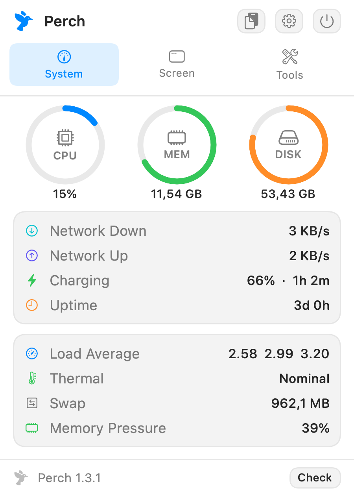
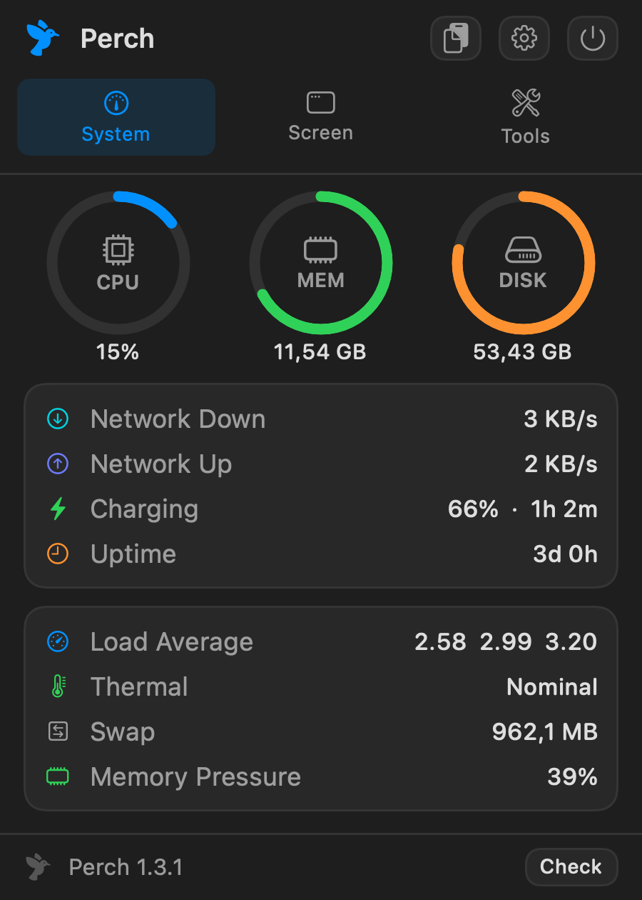

System
 Screen
Screen

 Tools
Tools
Tile windows, paste from history, switch with Alt-Tab, watch your system, warm the screen at night, reclaim disk space and lock the keyboard to clean it — all from one panel, all on a shortcut.
Free and open source.


System
Screen
Tools
Features
All of it free. There is no paid tier.
Snap to halves, thirds, quarters or full screen. Press the same shortcut again and the width cycles ½ → ⅓ → ⅔. Configurable gaps, move between displays, and ⌃⌥⌫ to undo.
Halves, Thirds, Main + Stack, Quarters and Focus. Applying one tiles your frontmost windows into its panes in order.
Hold ⌥, tap Tab, release to switch. Lists windows, not apps — two documents in one app are two entries. Or search them with ⌃⌥`.
Searchable, with image previews and the source app. Pin entries, paste with ⌘1–⌘9. Anything that looks like an API key or private key is skipped automatically.
CPU, memory and disk rings, plus network throughput, battery health and cycle count, load average, thermal state, swap and memory pressure. Show any stat inline in the menu bar.
Sixteen built-in cache targets — Xcode, npm, Homebrew, pip, Gradle and more — with measured sizes. Add your own. Everything goes to the Trash, never deleted outright.
Fills every display with flat black so dust actually shows. Space cycles colours, which doubles as a dead-pixel test.
Locks the keyboard for a countdown so you can wipe the keys without typing into anything. Hold Esc to finish early.
The opposite: the pointer freezes while the keyboard stays live, so a single Esc unlocks it. Your hands are nowhere near the keys while wiping a trackpad — that is the point.
Warms the screen from 6500K down to 2400K using display gamma, like f.lux — so it tints everything without an overlay and never appears in screenshots. Manual or scheduled.
A slider per display. Real backlight control for the built-in panel, software dimming for external monitors so it works over any cable.
Keeps the Mac and display awake until you switch it off. Plus quick toggles for clipboard recording and launch at login.
Keyboard
Every one of them rebindable in Settings.
| Shortcut | Action |
|---|---|
| ⌃⌥Space | Open the Perch panel |
| ⌘⇧V | Clipboard history |
| ⌥Tab | Alt-Tab — hold Option, tap Tab, release to switch |
| ⌃⌥` | Searchable window switcher |
| ⌃⌥← → | Left / right half — press again to cycle ⅓, ⅔ |
| ⌃⌥↑ ↓ | Top / bottom half |
| ⌃⌥↩ | Maximize |
| ⌃⌥⌫ | Restore original size |
| ⌃⌥⇧← → | Move to previous / next display |
| ⌃⌥N | Night mode |
| ⌃⌥K | Screen cleaning |
| ⌃⌥⇧L | Keyboard cleaning |
| ⌃⌥⇧T | Trackpad cleaning |
Get started
Free, and takes about a minute.
Grab the newest Perch-x.y.z.dmg from the releases page.
Open the DMG and drag the app onto the Applications shortcut, then eject it.
Perch is signed, but not notarized — that needs a paid Apple Developer account — so macOS blocks it on first launch. Paste this into Terminal:
xattr -dr com.apple.quarantine /Applications/Perch.app
Prefer not to use Terminal? Open Perch, dismiss the warning, then go to System Settings → Privacy & Security, scroll to Security and click Open Anyway. On macOS 15 and later, Control-clicking and choosing Open no longer works for unnotarized apps.
System Settings → Privacy & Security → Accessibility, then add
Perch.app. Needed for window tiling, the switcher, Alt-Tab and the
cleaning modes. Perch reads window positions and titles — never window contents.
Perch lives in the menu bar with no Dock icon. If a notch or a full menu bar hides the icon, the shortcut still opens the panel.
brew trust is required for any third-party tap — current Homebrew refuses to
load one without it. The xattr line is still needed: Homebrew 6 removed
--no-quarantine, and the app is quarantined regardless because it is not
notarized. Homebrew's advantage here is upgrades, not a smoother first launch.
brew tap ishanmalu/tap brew trust ishanmalu/tap brew install --cask perch xattr -dr com.apple.quarantine /Applications/Perch.app open -a Perch
Then grant Accessibility access under System Settings → Privacy & Security → Accessibility, and press ⌃⌥Space.
Needs Swift 6 and the macOS SDK. Command Line Tools are enough — full Xcode is not required.
git clone https://github.com/ishanmalu/perch.git cd perch Scripts/install.sh
Builds, runs the self-test, installs to /Applications and launches it.
Nothing is downloaded, so there is no quarantine flag to clear.
Transparency
Perch can see window titles, read the clipboard and intercept keystrokes. That deserves saying plainly.
The cleaning modes swallow input through an event tap. The handler increments a counter and discards the event — key codes are never stored, logged or written anywhere.
Stored locally with owner-only permissions. Password-manager content and anything resembling a credential are skipped. It is not encrypted, and the docs say so.
The update check is the only code that opens a socket, and it talks to GitHub alone. No analytics, no crash reporting, no phone-home.
A path guard rejects system directories, your home folder and its important children. Removal is always to the Trash, never an outright delete.
Full detail in SECURITY.md.
Every release ships a checksum, and you can run the built-in checks yourself with
Perch --selftest.